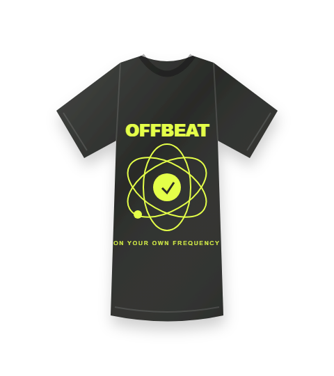
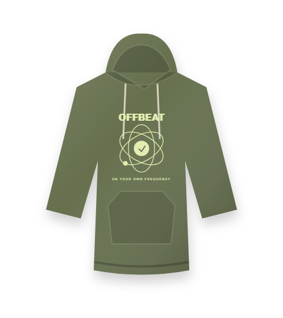
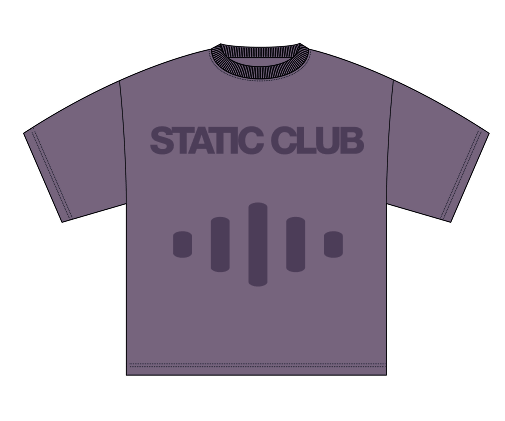
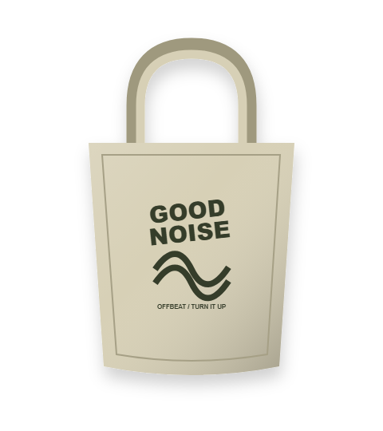

AFTER THE CITY SLEEPS.
After Hours Tee + celana hitam + sneakers favorit. Sederhana, dengan grafis yang jadi pusat perhatian.
SHOP THE PIECE ↗Empat cara sederhana membawa OFFBEAT ke keseharianmu. Pakai idenya, buat versimu sendiri.

After Hours Tee + celana hitam + sneakers favorit. Sederhana, dengan grafis yang jadi pusat perhatian.
SHOP THE PIECE ↗
Off Duty Hoodie dengan celana warna krem. Tambahkan tote untuk weekend tanpa terburu-buru.
SHOP THE PIECE ↗
Static Club Tee dan denim loose fit. Biarkan warna lilac memberi sedikit kejutan.
SHOP THE PIECE ↗
Everyday Carry Tote untuk menemani kaos putih dan celana santai. Muat barang penting, tetap ringan.
SHOP THE PIECE ↗Lookbook berupa arahan styling dan ilustrasi mockup orisinal, bukan foto produk sungguhan.